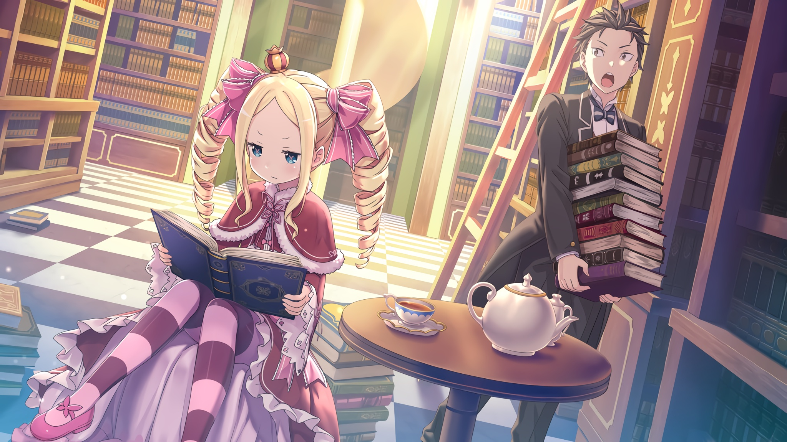

Сторонние истории
Эти короткие и не очень рассказы помогут вам рассмотреть одни и те же события с точки зрения разных персонажей и лучше понять устройство мира Re:Zero. Они важны не менее основных событий и, к сожалению, никогда не будут адаптированы в аниме.
EX-тома
EX4: Летопись кровавой дипломатии
Каноничные короткие истории
Ещё один снегопад воспоминаний. Глава 1
Эльза и Мейли, дневник сестёр-убийц
Хроники поиска пропавшего ребёнка. Части 1-2
Хроники поиска пропавшего ребёнка. Часть 3
Команда леса Кремальди. Дни, которые никогда не вернутся
Золотая Львица и Святой Меча. Свирепость льва, хроника 1
Ведьмы после чаепития. Хроника 1
Ведьмы после чаепития. Оценочное совещание ведьм
Ведьмы после чаепития. Требования быть ведьмой
Осторожная энциклопедия Джошуа Юклиуса. Стих 2
От всех одни хлопоты, я полагаю. Часть 1
От всех одни хлопоты, я полагаю. Часть 2